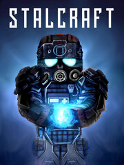

STALCRAFT
Details
|  | |
| Playtime | Not Played |
| Last Activity | Never |
| Added | 5/19/2024 18:53:06 |
| Modified | 5/19/2024 18:53:32 |
| Completion Status | Not Played |
| Library | Steam |
| Source | Steam |
| Platform | PC (Windows) |
| Release Date | 12/9/2022 |
| Community Score | 80 |
| Critic Score | |
| User Score | |
| Genre | Adventure |
| Developer | |
| Publisher | |
| Feature | Co-Operative Massively Multiplayer Online (MMO) Multiplayer |
| Links | Steam Twitch Discord |
| Tag | |
Description
STALCRAFT is a game in the MMOFPS genre with Survival Horror elements. It combines an open world, RPG and a dynamic shooter component.


Gameplay
Most of the time the player spends in the open world of the Chernobyl Exclusion Zone. Locations are filled with all kinds of PvP and PvE-activities, beloved by fans of Stalker: search for artifacts, mutant hunting, exploration of uncharted locations, doing quests and laboratories, participation in faction wars. For those who have little time to play, there are various session modes.Plot and quests
The main storyline introduces the player to the Zone and allows you to enjoy an intriguing story, complete with cut-scenes and fully voiced dialogues. The world is also filled with many side quests steeped in stalker spirit.First-person shooter
Weapon balance is not typical of open-world MMOs and is more reminiscent of session shooters like Call of Duty. We characterize our game as a fast-paced, reaction based and skill-driven shooter.